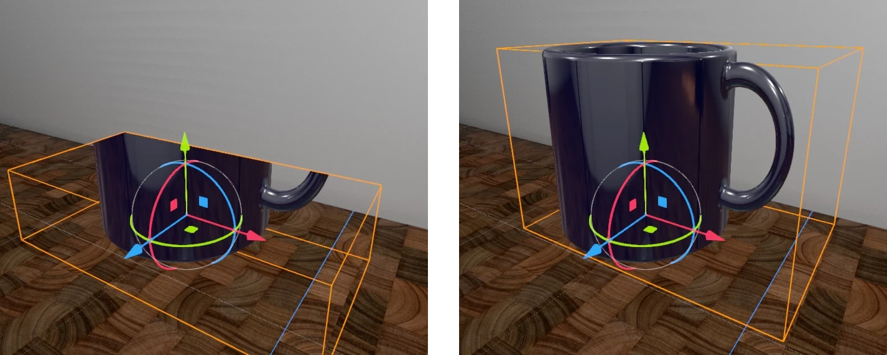
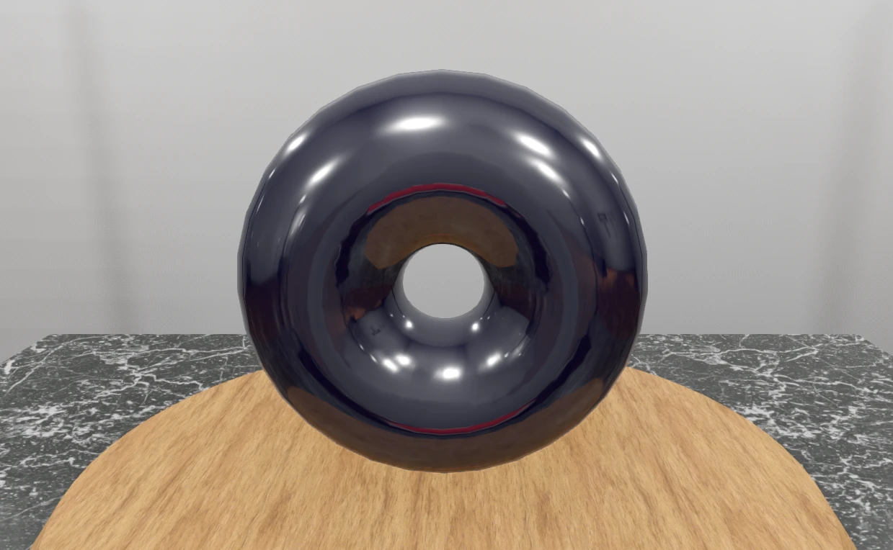
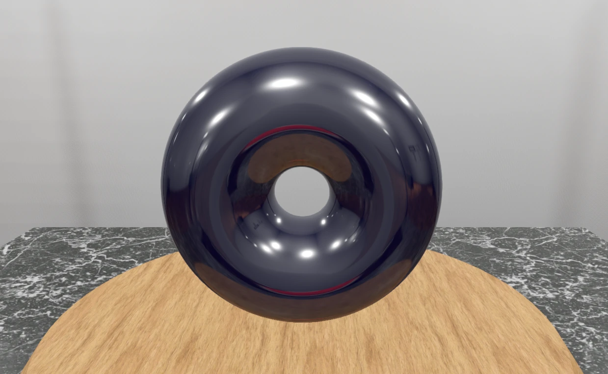
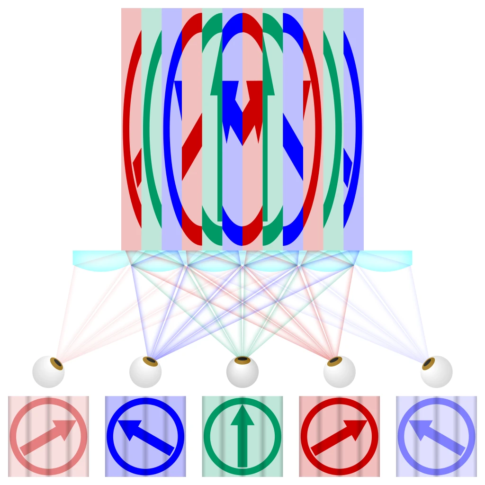
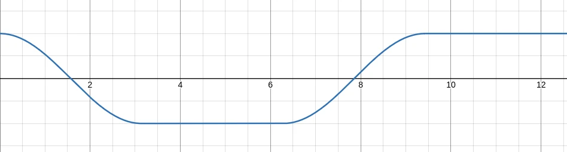

A museum that features four interactive exhibits, each focused on one of the following topics:
The project was initially developed using Godots
Forward+rendering backend. Every screenshot and recording on this page is done using this backend. Later, the rendering backend was changed toCompatibilityto create a web export. All exhibits still work the same, but the visual quality of the scene is reduced (disabled rendering features, reduced number of lights, disabled shadows).
TODO
Forward+)TODO
Compatibility, reduced visual Quality)TODO
Relevant folder in the Godot project:
res://_sdf.
The first exhibit is an object defined by a signed distance field (SDF) and rendered using ray marching. It interacts with the rest of the scene, which is rendered using conventional methods. The presented approach can also be used to implement other ray tracing techniques.
Image-based rendering describes rendering using bitmap images that encode scene content. Image-based techniques are used in two ways here:
The morphing between shapes shows how a cheap effect like reflection mapping can be made to look good.
Since ray marching is used, a form of ray tracing, the shape and shading of the object is entirely defined in the fragment shader. Typically, with ray tracing, calculations happen for every pixel of the resulting image. Following this, it would be possible to implement it as a fullscreen post-processing effect. Every fragment, in which the ray does not hit the object or is behind already drawn geometry, can be discarded:
vec3 normal; vec3 hit_pos;
bool hit = sphere_trace_ray(ray, local, normal, hit_pos);
if (!hit) { discard; }
However, it is also possible to implement this in the fragment shader of a normal mesh instead of as a fullscreen effect. The only limitation is that we cannot render anything outside the mesh, so the mesh is effectively a bounding shape for the object. This has performance advantages:
The images below show the edges of the mesh in orange. On the left image, the mesh is not big enough to contain the object.

Note that the culling mode must be changed to front face culling, so only front faces are drawn. Otherwise, the object is not rendered when the camera is inside the mesh.
For a better integration into Godot, the projection matrix, view matrix and model matrix are used for ray generation:
float depth = texture(depth_texture, SCREEN_UV).x;
// This assumes the use of the Forward+ or Mobile renderers
vec3 ndc = vec3(SCREEN_UV * 2.0 - 1.0, depth);
// Use this for the compatibility renderer
//vec3 ndc = vec3(SCREEN_UV, depth) * 2.0 - 1.0;
vec4 world = INV_VIEW_MATRIX * INV_PROJECTION_MATRIX * vec4(ndc, 1.0);
vec3 world_depth_map_pos = world.xyz / world.w;
mat4 inv_model_matrix = inverse(MODEL_MATRIX);
vec3 local_depth_map_pos = (inv_model_matrix * vec4(world_depth_map_pos, 1.0)).xyz;
vec3 local_cam_pos = (inv_model_matrix * vec4(CAMERA_POSITION_WORLD, 1.0)).xyz;
Ray ray = Ray(local_cam_pos, normalize(local_depth_map_pos - local_cam_pos));
This way, the object is also visible in the editor and respects the transform of the corresponding MeshInstance3D. Ray marching is done in its local space. Therefore, SDFs can be transformed like any other 3D objects.
Godots default lighting is used. The NORMAL and LIGHT_VERTEX variables are set in fragment() to ensure the lighting and reflection mapping is correct:
vec3 world_normal = normalize(mat3(MODEL_MATRIX) * local_normal);
NORMAL = mat3(VIEW_MATRIX) * world_normal;
vec4 world_hit_pos = MODEL_MATRIX * vec4(local_hit_pos, 1.0);
LIGHT_VERTEX = (VIEW_MATRIX * world_hit_pos).xyz;
Torus rendered using rasterization:

Torus rendered using ray marching:

In the rasterized torus, you can make out the vertices and edges of the mesh in the reflections. The ray marched torus has perfect reflections.
In principle, it would be possible to implement the recursive ray tracing algorithm using this approach: Whenever the ray does not hit the object anymore, the reflection map is sampled. However, this is currently difficult to implement in Godot, since Godot does not provide any way to access the reflection map of a reflection probe.
The final piece of the puzzle for feature parity with conventional meshes is shadows and correct rendering of multiple intersecting objects.
With the current implementation, the shader reads the depth map. This means that the object is rendered after the opaque render pass and cannot write to the depth map. This is similar to the way transparent objects are handled and leads to the same limitations: If multiple objects intersect, the result is wrong and shadows are not possible.
Alternatively, the SDF can be rendered as part of the opaque rendering pass by writing the correct depth to the DEPTH variable. This way the depth map does not need to be sampled manually and multiple SDF intersection is possible. Even though we write to the DEPTH, the rendering of the shadow map does not seem to take that into account. Instead, it uses the fragments position to calculate the depth, resulting in incorrect shadows. It seems this is a limitation of Godots shadow mapping implementation.
Relevant folder in the Godot project:
res://_lenticular.
The second exhibit is a lenticular print, aka "wiggle picture" or "tilt card". It also implements a time-based scrolling between two lenticular prints, similar to a scrolling billboard.
Lenticular printing is a technique in which lenticular lenses are used to produce images with the ability to change as they are viewed from different angles. This can be used to create an illusion of depth.
Video showing some lenticular cards: https://youtu.be/CMOzFkbqst8
To create a lenticular print, multiple steps are necessary:
The refraction effect of a lenticular sheet is shown in this image:

source: https://en.wikipedia.org/wiki/Lenticular_printing#/media/File:Lenticular_printing_principle.svg; author: Cmglee; license: CC BY-SA 4.0
When implementing, I followed the three steps described above.
First, I collected the source images that are used for the print. I used previous projects to take screenshots. I took 16 pictures each from slightly different angles. The pictures can be found in the Godot project under res://_lenticular/animation_frames_crown and res://_lenticular/animation_frames_raytracing.
After that, I implemented a shader that slices and interlaces these images, just as it is done in real life. In Godot, the images were created in the scene res://_lenticular/interlaced_render.tscn. There are two nodes for creating interlaced renders. One for the crown, one for the ray tracing image. If you check the enable option on one of those and run the scene, a screenshot.png will be created containing the lenticular print. This works by applying an unlit fullscreen shader (res://_lenticular/interlaced.gdshader), resizing the window to the desired resolution and capturing a screenshot. Note that these images could be printed and used for real life lenticular prints.
Lastly, the behaviour of a lenticular sheet is imitated with a shader (res://_lenticular/lenticular.gdshader). The shader reproduces the refraction effect of a lenticular sheet. Depending on the viewing angle, the interlaced image is sampled at a different location. Note that any interlaced image may be used as input for this shader. The shader is configurable for any number of source images and number of slices of the interlaced image.
To imitate the reflections of the lenticular sheet a normal map generated from a noise texture was used. It was stretched along the y texture coordinate to imitate the structure of a lenticular sheet.
The billboard-like scrolling is implemented using an offset of the y texture coordinate following this function:

Relevant folder in the Godot project:
res://_fur.
This exhibit shows 3 shapes with different kinds of fur. They are physically simulated and bounce around when the red button is pressed. The fur reacts to the movement. One of the shapes changes its size over time.
The fur is implemented using a technique called shell texturing. The fur is inspired by this video: https://youtu.be/9dr-tRQzij4
Shell texturing creates the illusion of dense geometry from simple geometry. It can simulate dense hair or grass. Games like Dark Souls, Genshin Impact and Viva Piñata use it.
Shell texturing works by layering a simple flat mesh (the "shell") multiple times on top of another.
Relevant folder in the Godot project:
res://_crepuscular_rays.